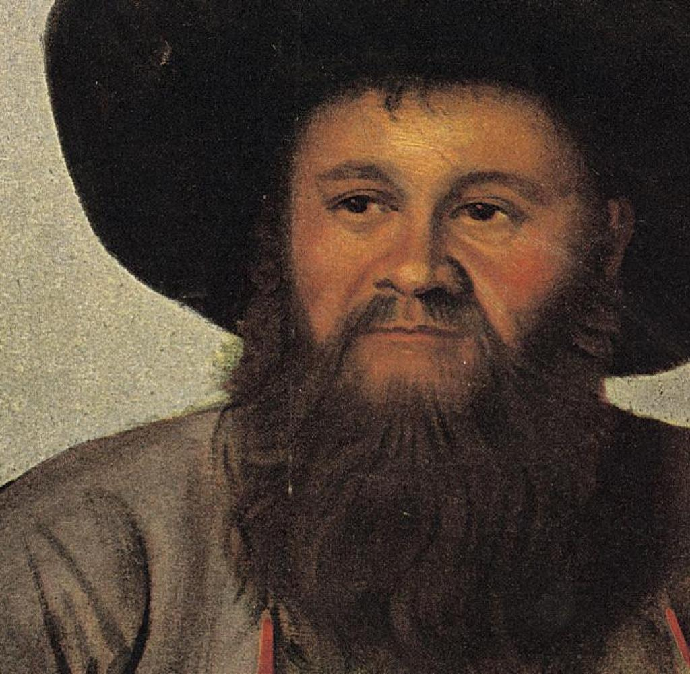

- Andreas Hofer was born in 1767 in St. Leonhard in Passeier in Tyrol.
- He was the innkeeper of the Sandhof.
- 1809 became the leader of the Tyrolean Rebellion against the Napoleonic invasion.
- He was captured by Italian troops on January 28, 1810 and was sent to Mantua in chains to face a court-martial.
- Andreas Hofer was executed by a firing squad on February 20, 1810. Hofer became a martyr in Germany and Austria and a rallying symbol against the power of Napoleon.
- The song Zu Mantua in Banden tells the story of his tragic fate and execution.
Andreas Hofer - Leader of the Tyrolean Rebellion

Portrait of Andreas Hofer